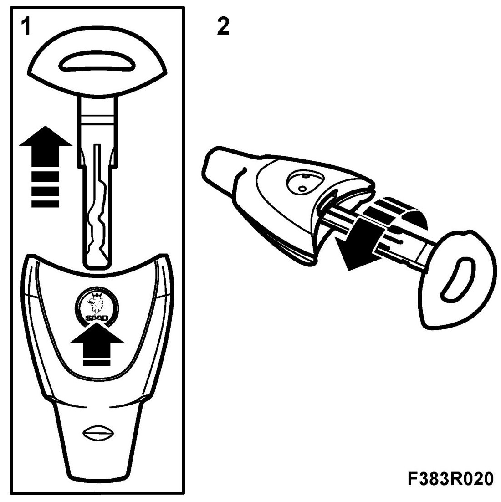
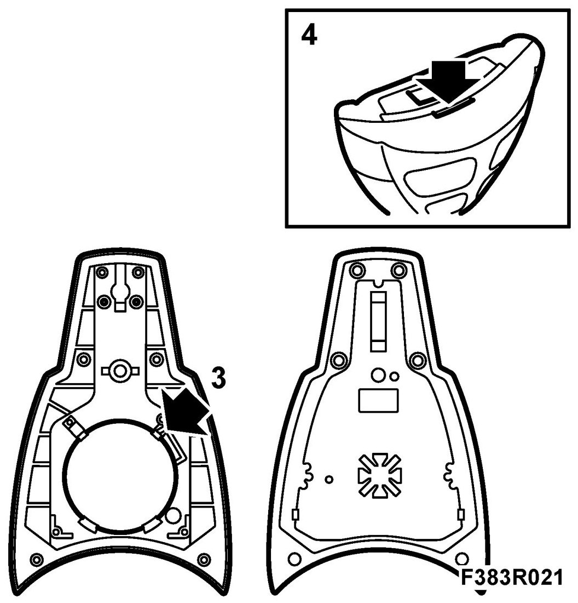

Keyless Entry Transmitter: Service and Repair
Changing The Key Battery
1. Press the badge on the back of the remote control and remove the emergency key.

2. Insert the tip of the key into the small hole and turn the key to split the remote control.
3. Change the battery.
NOTE: Avoid touching the circuitry in the remote control and the battery contacts. Hold the sides of the battery.

4. Fit together the two halves of the remote control.
After changing the battery, it may be necessary to synchronize the remote control with the car's receiver. The remote control is synchronized after a change of battery the first time it is inserted into the ignition switch. If the battery has been changed outside the car and the car is locked, proceed as follows:
1. Unlock the front left door with the traditional key. If the car has a car alarm, this will be tripped.
2. Open the door, insert the remote control into the ignition switch and turn the remote control. If the car has a car alarm, this will be silenced. The remote control and receiver unit are now synchronized.